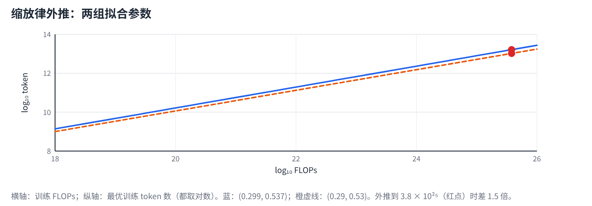
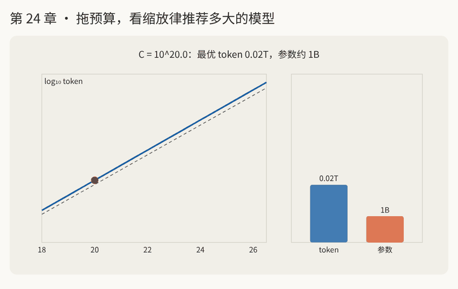

第 24 章 · 大厂怎么选配置：LLaMA 3 的缩放律选型、长上下文续训、Qwen3 的 QK-norm
本地运行
git clone https://github.com/wikieden/beyond-transformer
cd beyond-transformer/code/notebooks
pip install jupyterlab torch numpy
jupyter lab ch24_configs.ipynb也可以下载后直接用 VS Code 打开 .ipynb 运行。需要 GPU 的章节在 Colab 里选「代码执行程序 → 更改运行时类型 → GPU」。
本章回答：手上有 3.8 × 10²⁵ FLOPs 的预算，模型该做多大、训多少 token？LLaMA 3 是怎么用小实验拟合一条缩放律、外推出 405B 的？为什么现在的模型一个参数要喂上千个 token，远超 Chinchilla 的 20 个？一张配置表（层数、宽度、FFN、Q/KV 头数）怎么读？长上下文为什么要放到最后、分六段拉长？Qwen3 为什么用 QK-norm 换掉了 QKV bias？
讲解日期：2026-11-26 · 上一章：第 23 章 滑动窗口 · 下一章：第 25 章 MLA
对应原文：LLaMA 3transformer-deep-dive/materials/text/papers/llama3-herd-2407.21783.txt摘要 L51–L52（3.8 × 10²⁵ FLOPs、405B、15.6T token）、架构 L314–L345（GQA 8 组、跨文档的注意力 mask、RoPE 底数 500,000、Table 3 各尺寸配置 L322–L333）、§3.2.1 Scaling Laws L349–L416（IsoFLOPs 曲线、N(C) = A·C^α、(α, A) = (0.53, 0.29)、Figure 3 的拟合线 α = 0.537、A = 0.299 L379、外推到 402B / 16.55T）、§3.4.2 Long Context Pre-Training L748–L757（分六段从 8K 到 128K，约 800B token）；Qwen3qwen3-2505.09388.txt§2 L118–L146（GQA、SwiGLU、RoPE、RMSNorm、去掉 QKV bias 换成 QK-Norm；Table 1 各尺寸）
本章缩写：IsoFLOPs（等算力：在同样的 FLOPs 预算下比较不同大小的模型）；N(C)（这里指给定算力 C 时最优的训练 token 数，LLaMA 3 论文的记法）；C = compute（训练 FLOPs）；tokens / param（每个参数喂多少个 token）；QKV bias（Q、K、V 投影上的偏置项）；needle in a haystack（大海捞针：在长文本里找一句插进去的话，测长上下文）。全部缩写见 附录 · 缩写与术语表
讲解
第一步：用缩放律选模型大小（2026-11-26）
类比：先用小锅试做，再决定大锅放多少料。 在一系列小预算下（每个预算训好几种大小的模型）找出“这个预算下最好的大小和数据量”，把这些点连成一条线，外推到真正的大预算。
LLaMA 3 §3.2.1（L349–L416）：
- 在 6 × 10¹⁸ 到 10²² FLOPs 的若干预算下，各训一批不同大小的模型，画出“loss vs 训练 token 数”的 IsoFLOPs 曲线，用抛物线拟合，最低点就是这个预算下的最优点；
- 假设最优 token 数和算力是幂律关系 N*(C) = A·C^α，拟合得 (α, A) = (0.53, 0.29)（L414）；
- 外推到 3.8 × 10²⁵ FLOPs：最优是 402B 参数、16.55T token（L415–L416）；实际训的是 405B、15.6T。
参数量由“训练 FLOPs ≈ 6 × 参数 × token”（第 8 章）反推：参数 ≈ C/(6·token)。
数字演示（C = 3.8 × 10²⁵）：
| (A, α) | 最优 token | 参数 ≈ C/(6·token) |
|---|---|---|
| (0.29, 0.53)：正文里四舍五入后的值 | 10.46T | 605B |
| (0.299, 0.537)：Figure 3 拟合线上标的值（L379） | 16.29T | 389B |
只差小数点后两三位，外推结果就差了 1.5 倍：幂律在对数坐标上外推了好几个数量级，指数上 0.007 的差别会被放大成 C^{0.007} ≈ 1.5 倍。用缩放律做决定时，拟合参数要保留足够的精度。论文还观察到大预算下 IsoFLOPs 曲线在最低点附近变平：模型大小差一点，loss 几乎不变，所以 402B 和 405B 没区别。

图 24-1 · 横轴是训练 FLOPs（对数），纵轴是最优训练 token 数（对数）。蓝：A·C^α，(0.299, 0.537)；橙虚线：(0.29, 0.53)。两条线在小预算处几乎重合，外推到 3.8 × 10²⁵ 时差了 1.5 倍一句话：LLaMA 3 用小预算下的 IsoFLOPs 曲线找最优点，拟合幂律 token* = A·C^α，外推出 402B / 16.55T；外推几个数量级时，指数的小误差会被放大。
第二步：token / 参数比越来越大（2026-11-26）
Chinchilla 的结论是“每个参数约 20 个 token 最划算”（只算训练成本）。现在的模型远远超过这个比：
| 模型 | 参数 | 训练 token | token / 参数 | 训练 FLOPs |
|---|---|---|---|---|
| Chinchilla 70B | 70B | 1.4T | 20 | 5.9 × 10²³ |
| LLaMA 1 7B | 6.7B | 1.0T | 149 | 4.0 × 10²² |
| LLaMA 3 8B | 8B | 15T | 1,875 | 7.2 × 10²³ |
| LLaMA 3 405B | 405B | 15.6T | 39 | 3.8 × 10²⁵ |
405B 是按缩放律选的，接近“训练最优”；8B 则是第 21 章说的“小模型多训数据”：训练时多花算力（7.2 × 10²³，比同算力下的最优模型小得多），换来推理便宜。小模型一直训下去 loss 还在降，只是降得慢。
一句话：旗舰模型按缩放律选（405B 约 39 token / 参数），部署用的小模型故意“过度训练”（8B 达到 1875 token / 参数），用训练算力换推理成本。
第三步：读配置表（2026-11-26）
LLaMA 3 的 Table 3（L322–L333）：
| 8B | 70B | 405B | |
|---|---|---|---|
| 层数 | 32 | 80 | 126 |
| 宽度 d | 4,096 | 8,192 | 16,384 |
| FFN 宽度 | 14,336 | 28,672 | 53,248 |
| Q 头 / KV 头 | 32 / 8 | 64 / 8 | 128 / 8 |
读法：
- 每头维数 = d / Q 头数：三个都是 128，几乎所有大模型都取 128；
- FFN / d：8B、70B 是 3.5，405B 是 3.25，都不是 8/3 ≈ 2.67：SwiGLU 的 8/3 只是“和 4d 的普通 FFN 参数一样”的起点，大模型常把 FFN 再放宽一些；
- KV 头固定 8 组：Q 头数随规模增长，KV 组数不变，所以 Q 头 / KV 头从 4 涨到 16（第 22 章：越大的模型 cache 省得越多）；
- 其他：RoPE 底数从 10,000 提到 500,000（L343，长上下文的分辨率，第 15、17 章）；同一条训练序列里拼接的多个文档之间加 mask，不让它们互相看（L316）。
Qwen3 的 Table 1（L138–L146）：0.6B 到 32B，同样是 Q/KV = 多 / 8，小模型共享嵌入和输出层（tie embedding），大模型不共享。
一句话：读配置表看每头维数（几乎都是 128）、FFN / d（3.25 到 3.5）、Q/KV 头比（KV 组数固定 8）、RoPE 底数。
第四步：长上下文放最后，分段拉长（2026-11-26）
LLaMA 3 §3.4.2（L748–L757）：
- 注意力的计算随长度平方增长，所以大部分预训练只用 8K 的上下文；
- 预训练最后阶段才拉长，分六段从 8K 到 128K，每段训到“短文本评测恢复、大海捞针全对”再进入下一段；
- 这一阶段一共约 800B token（占总量约 5%）。
示意（每段乘同一个倍数）：8,192 → 14,263 → 24,834 → 43,238 → 75,281 → 131,072。论文没给每段的具体长度，这只是说明“逐步拉长”的样子。配合第 17 章的方法：RoPE 底数调大，再在长数据上续训。
一句话：长上下文放在预训练最后、分几段逐步拉长，每段确认短文本能力没掉、长文本能找到信息再继续。
第五步：Qwen3 用 QK-norm 换掉 QKV bias（2026-11-26）
Qwen3 §2（L122–L127）：架构和 Qwen2.5 一样（GQA、SwiGLU、RoPE、RMSNorm pre-norm），唯一的改动是去掉 Q、K、V 投影上的 bias，加上 QK-norm，“以保证训练稳定”。
这正是第 18 章的结论：q、k 的大小一失控，注意力 logit 就平方增长、softmax 坍缩；QK-norm 给 logit 一个上界。QKV bias 是 Qwen 1、2 系列特有的设计（大多数模型早就去掉了 bias，第 13 章），在加了 QK-norm 之后就没必要了。
场景代码：从 Hugging Face 读配置，算第三步那几个比例（真实库调用；本书 chapter-code 只用 NumPy，这段没跑过）：
cfg = AutoConfig.from_pretrained("meta-llama/Llama-3.1-8B")
print(cfg.hidden_size // cfg.num_attention_heads, # 每头维数 128
cfg.intermediate_size / cfg.hidden_size, # FFN / d = 3.5
cfg.num_attention_heads // cfg.num_key_value_heads, # Q/KV = 4
cfg.rope_theta) # 500000.0
一句话：Qwen3 唯一的架构改动是去掉 QKV bias、加 QK-norm，为了训练稳定。
动画演示：拖预算，看缩放律推荐多大的模型

可交互版：animations/24-configs.html（滑块：训练 FLOPs；下拉：两组拟合参数）。
怎么看：
- 左边是 token* = A·C^α 的直线（对数坐标），红点是当前预算（第一步）；
- 右边两根柱子：推荐的训练 token 数和参数量（参数 = C / 6 / token）；
- 切换拟合参数：小预算时两者几乎一样，预算越大差得越多。
练习与作答记录
题 1（第一步）：用 (A, α) = (0.299, 0.537)，C = 10²⁴ FLOPs 时最优 token 数和参数量各是多少？
题 2（第二步）：一个 3B 模型训了 18T token，token / 参数比是多少？训练 FLOPs 是多少？
题 3（第三步）：一个模型 d = 5120、40 个 Q 头、8 个 KV 头、FFN 17408，每头维数、FFN / d、Q/KV 比各是多少？
口诀
小锅试做找最优，点连成线外推大锅；指数差一点，外推差一截。
旗舰按缩放律，小模型多训数据，一个参数喂上千个 token。
读配置：头维一二八，FFN 三倍半，KV 固定八组，RoPE 底数调大。
长上下文放最后，分段拉长；Qwen3 去掉 QKV bias 换 QK-norm。
本章复习卡片
必背：B57（LLaMA 3 的缩放律选型和外推的敏感性、token / 参数比、读配置表、长上下文分段续训、Qwen3 的 QK-norm）。练习做完后，按答错、卡住的地方再补。
附录 · 延伸阅读
留给以后深入学习用，不影响本章主线。★ 是建议先读的。
推荐阅读
| 读什么 | 读哪里 | 读它为了什么 |
|---|---|---|
| ★ The Llama 3 Herd of Models（2024） | §3.2 L314–L416；§3.4.2 L748–L757 | 架构、缩放律、长上下文续训 |
| ★ Qwen3 Technical Report（2025） | §2 L118–L146 | QK-norm、配置表 |
| Chinchilla（Hoffmann 等 2022） | IsoFLOPs 方法（math-and-eval-stats/materials/text/papers/ 有文本版） |
缩放律方法的出处 |
| 《数学与实验统计》第 41 章 scaling law | 全部 | 缩放律的数学和拟合 |
数学原理
- 幂律外推的误差：log token* = log A + α log C；α 的误差 Δα 在 C = 10²⁵ 时带来 C^{Δα} 倍的误差，Δα = 0.007 约 1.5 倍。
- 参数反推：C ≈ 6·N_params·D_tokens ⇒ N_params ≈ C/(6D)。
- 过度训练：固定模型大小、增加 token，loss 继续下降但边际递减；推理成本只和参数有关。
公式清单
| 公式 | 意思 |
|---|---|
| \(\text{token}^*(C) = A\cdot C^\alpha\) | LLaMA 3 的最优 token 数 |
| \(N \approx C/(6D)\) | 由算力和 token 反推参数 |
| 每头维数 = d / H，FFN / d，H / H_kv | 读配置的三个比例 |
代码对照：把本章的数字用代码算一遍
NumPy。代码在仓库本地
beyond-transformer/solutions/chapter-code/ch24_configs.py，配套测试tests/test_ch24.py，notebook 在notebooks/ch24_configs.ipynb：
bash cd beyond-transformer/solutions/chapter-code uv run python ch24_configs.py uv run pytest tests/test_ch24.py
讲义 ↔ 代码：
| 讲义 | 公式 | 写法 | 跑出来 |
|---|---|---|---|
| 第一步 缩放律 | A·C^α、C/(6D) | optimal_tokens、params_from |
16.29T / 389B；10.46T / 605B |
| 第二步 token / 参数 | D/N | RUNS |
20、149、1875、39 |
| 第三步 配置表 | 三个比例 | read_config(LLAMA3[...]) |
128、3.5、4 |
| 第四步 分段 | 等比 | context_stages() |
8192 … 131072 |
关键几行：
return a * c**alpha # 最优 token 数
return c / (6 * tokens) # 参数 ≈ C / (6·token)
r = (end / start) ** (1 / (stages - 1)) # 示意：每段乘同一个倍数
代码里才看得到的 2 件事：
- 论文里的 N 指 token：LLaMA 3 写的 N*(C) 是“最优训练 token 数”，不是参数量；和 Chinchilla 的符号习惯不同，读的时候很容易搞混。
- 配置表只用来读比例：用这些配置逐项数参数、对上官方的 8B / 70B / 405B，是里程碑 T-M1。
自己改一改（不影响练习答案）：
- 把 C 换成 10²³、10²⁷，两组拟合参数的推荐相差多少倍？
- 把
context_stages改成 4 段，每段乘多少？